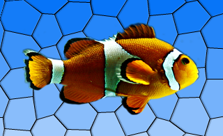

| Home · All Classes · Modules · QSS HELP · QSS 案例 · VER007 HOME |
该QGraphicsEffect类是所有图形效果的基类。More...
继承QObject。
通过继承QGraphicsBlurEffect，QGraphicsColorizeEffect，QGraphicsDropShadowEffect和QGraphicsOpacityEffect。
该QGraphicsEffect类是所有图形效果的基类。
效果改变元素挂接到渲染管线和源（例如，一个操作之间的外观QGraphicsPixmapItem）和目标设备（例如，QGraphicsView的视口） 。效果可以通过调用setEnabled （假）被禁用。如果效果被禁用，源直接呈现。
要添加一个视觉效果的QGraphicsItem例如，您可以使用一个标准的影响，或交替，通过创建QGraphicsEffect的子类创建自己的效果。关于该项目的使用效果可以被安装QGraphicsItem.setGraphicsEffect（ ） 。
Qt提供了以下标准的影响：
|
 |
|
|
|
|
|
|
|

有关如何使用每种效果的更多信息，请参见具体效果的文档。
要创建自己的自定义效果，创造QGraphicsEffect （或任何其他现有效果）的一个子类，并重新实现虚函数draw（ ） 。这个函数被调用时的效果需要重绘。该draw（ ）函数将画家与画作为参数。欲了解更多信息，请参阅documenation的draw（ ） 。在draw（ ）函数可以调用sourcePixmap（ ）来获得图形效果的源，然后可以处理的像素图。
如果你的效果变化，使用update（）来请求重绘。如果您的自定义效果改变源的边界矩形，例如，径向发光效果可能需要申请额外的保证金，您可以重新实现虚boundingRectFor（ ）函数，并调用updateBoundingRect（ ）通知框架每当这个矩形的变化。虚拟sourceChanged（ ）函数被调用以通知的影响，源已经以某种方式改变 - 例如，如果源是一个QGraphicsRectItem其矩形的参数发生了变化。
这个枚举变量描述了在QGraphicsEffectSource发生了变化。
| Constant | Value | Description |
|---|---|---|
| QGraphicsEffect.SourceAttached | 0x1 | 效果是安装在一个源。 |
| QGraphicsEffect.SourceDetached | 0x2 | 效果被卸载的来源。 |
| QGraphicsEffect.SourceBoundingRectChanged | 0x4 | 源的边界矩形已经改变。 |
| QGraphicsEffect.SourceInvalidated | 0x8 | 源的视觉外观已经改变。 |
该ChangeFlags类型是一个typedef为QFlags\u003cChangeFlag\u003e 。它存储ChangeFlag值的或组合。
这个枚举变量描述了如何从sourcePixmap返回的像素图会被填充。
| Constant | Value | Description |
|---|---|---|
| QGraphicsEffect.NoPad | 0 | 像素图不应该接受任何额外的填充。 |
| QGraphicsEffect.PadToTransparentBorder | 1 | 像素图会被填充，以确保它有一个完全透明的边框。 |
| QGraphicsEffect.PadToEffectiveBoundingRect | 2 | 像素图会被填充，以配合效果的有效边界矩形。 |
该parent的说法，如果不是没有，原因self通过Qt的，而不是PyQt的拥有。
构造一个新的QGraphicsEffect经指定的实例parent。
返回的有效边界矩形这种效果，即在设备坐标源的边界矩形，由效果本身应用的任何利润调整。
See also boundingRectFor（）和updateBoundingRect（ ） 。
返回有效边界矩形这样的效果，给出了提供rect在设备的坐标。当你编写自己的自定义效果，你必须调用updateBoundingRect（ ）每当任何参数发生改变，可能会导致这个这个函数返回一个不同的值。
See also sourceBoundingRect（ ） 。
这种方法是抽象的，应在任何子类中重新实现。
这个纯虚函数绘制的效果，被称为每当源需要被绘制。
在重新实现这个函数QGraphicsEffect子类提供的效果的绘图实现，用painter。
例如：
MyGraphicsEffect.draw(QPainter *painter) { ... QPoint offset; if (sourceIsPixmap()) { // No point in drawing in device coordinates (pixmap will be scaled anyways). const QPixmap pixmap = sourcePixmap(Qt.LogicalCoordinates, &offset); ... painter->drawPixmap(offset, pixmap); } else { // Draw pixmap in device coordinates to avoid pixmap scaling; const QPixmap pixmap = sourcePixmap(Qt.DeviceCoordinates, &offset); painter->setWorldTransform(QTransform()); ... painter->drawPixmap(offset, pixmap); } ... }
这个函数不应该显式调用的用户，因为它的意思是只重新实现的目的。
绘制源直接使用给定的painter。
此功能只能由被称为QGraphicsEffect.draw（ ） 。
例如：
MyGraphicsOpacityEffect.draw(QPainter *painter) { // Fully opaque; draw directly without going through a pixmap. if (qFuzzyCompare(m_opacity, 1)) { drawSource(painter); return; } ... }
See also QGraphicsEffect.draw（ ） 。
这种方法也是一个Qt槽与C + +的签名void setEnabled(bool)。
返回源映射到给定的边界矩形system。
调用此函数Qt.DeviceCoordinates外QGraphicsEffect.draw（ ）将给不确定的结果，因为没有可用的设备上下文。
See also draw（ ） 。
这个虚函数被调用QGraphicsEffect以通知源发生了变化的影响。如果效果适用于任何高速缓存，那么该缓存必须以反映源的全新亮相清除。
该flags描述发生了什么变化。
返回True如果源有效地为一个像素映射，例如，一个QGraphicsPixmapItem。
此功能可用于优化目的。举例来说，有没有点绘制在设备中的源坐标，以避免像素图的缩放，如果这个函数返回True - 源像素图将反正缩放。
返回一个像素图，画到它的来源。
该system指定了坐标系也可以用于源。可选的offset返回参数的偏移，其中像素图应使用当前的画家来画。有关如何在像素图是填充用的控制mode参数。
返回的像素图剪切到当前画家的设备时，矩形system is Qt.DeviceCoordinates。
调用此函数Qt.DeviceCoordinates外QGraphicsEffect.draw（ ）将给不确定的结果，因为没有可用的设备上下文。
See also draw（）和boundingRect（ ） 。
这种方法也是一个Qt槽与C + +的签名void update()。
附表的效果重绘。调用此函数时的效果需要重新绘制。该功能不会触发源的重绘。
See also updateBoundingRect（ ） 。
该函数通知影响的框架时，效果的边界矩形已经改变。作为一个自定义效果的作者，你必须调用这个函数，每当您更改任何参数，将导致虚拟boundingRectFor（ ）函数返回一个不同的值。
这个函数会调用update（ ）如果这是必要的。
See also boundingRectFor（ ）boundingRect（）和sourceBoundingRect（ ） 。
这是该信号的默认超载。
每当效果是启用或禁用该信号被发射。该enabled参数保存效果的新启用的状态。
See also isEnabled（ ） 。
| PyQt 4.10.3 for X11 | Copyright © Riverbank Computing Ltd and Nokia 2012 | Qt 4.8.5 |